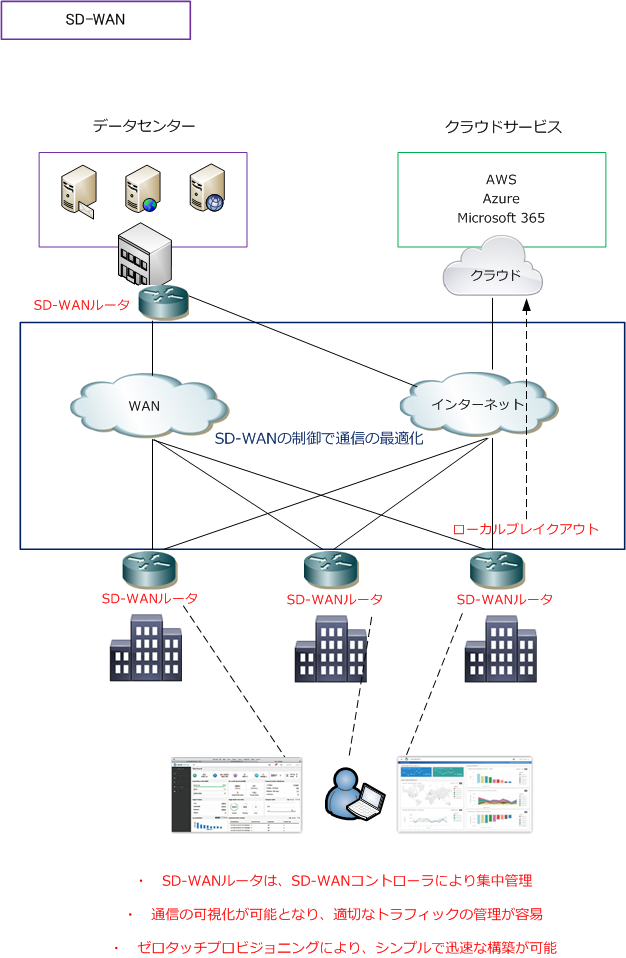
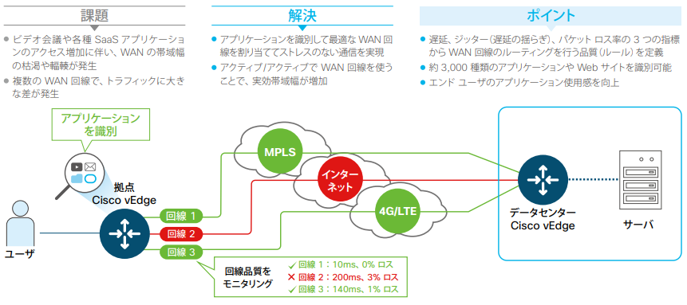
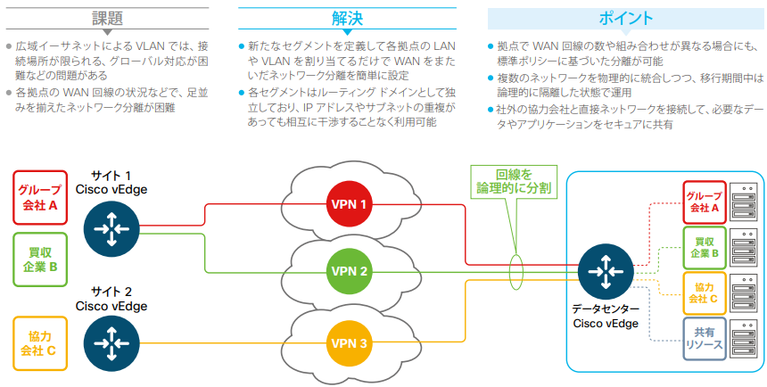

SD-WAN
SD-WANとは
SD-WAN（Software-Defined Wide Area Network）とは、ソフトウェアにより定義するWANのことです。 SD-WANでは、物理的なネットワーク機器で構築したWAN上に、ソフトウェアを使用して仮想的なWANの 構築と管理を実現します。簡単に言えばSD-WANは、SDNをWANに適用した技術と言えます。
SD-WANでは管理ソフトウェアであるオーケストレータで各拠点に配置されているネットワーク機器を集中 管理することができます。SD-WANはオーケストレータのSD-WANコントローラとSD-WANルータの大きく 2つのコンポーネントで構成されます。
SD-WANコントローラは、インターネット経由でクラウドサービスとして提供を受けるかたちで導入するか、 ユーザのオンプレミス環境でハードウェアを設置する形態として導入するかを選べます。SD-WANルータは、 物理的または仮想的にネットワーク内の任意の場所に導入することができます。SD-WANルータの呼称には、 SD-WANエッジ、SD-WANエッジルータ、SD-WANデバイス、SD-WAN装置などがあります。

SD-WANでは、通信トラフィックを最適な経路に分散させることができます。機密性が高くセキュアな通信が 必要なトラフィックは閉域網のWAN回線に振り分け、音声トラフィックは回線品質の高いWAN回線に振り分け、 信頼できる特定のクラウドサービスへのトラフィックはSD-WANルータが直接収容するインターネット回線に 振り分けることが可能です。
SD-WANでは、アンダーレイネットワーク（下位層のネットワーク）に、MPLS-VPNなどのWANだけでなく ブロードバンドなどのインターネット回線などが利用可能であり、キャリアの制約はないことが一般的です。 オーバーレイネットワーク（物理ネットワーク上に構築された仮想ネットワーク）ではSD-WANルータ間の IPsecトンネルが構築されます。オーバーレイネットワークではアプリケーションのトラフィックを識別した ポリシーベースルーティングが行われます。ルーティングにおけるPBRと同じ考え方です。
SD-WANの機能：ZTP（ゼロタッチプロビジョニング）とは
ゼロタッチプロビジョニングとは、ネットワーク構築作業を自動化する仕組みのことです。ベンダーにも よりますが、SD-WANルータにはデフォルトで物理インターフェースにDHCPの設定とコントローラへの リダイレクト設定があることから、DHCP/DNS環境があれば、電源ケーブルとLANケーブルを挿すだけで 現地作業が完了します。設定情報はSD-WANコントローラから自動的に流し込まれます。
SD-WANコントローラからは、IPsecトンネルを構築するために大きく以下の2つの情報が伝えられます。 ・ IPsecトンネルを構築するためのSD-WANルータのIPアドレス情報 ・ 事前共有鍵とデジタル証明書などの認証情報
IPsecトンネルを確立後、SD-WANコントローラとSD-WANルータの間はTLSにより通信が保護されます。 BFD（Bidirectional Forwarding Detection）プロトコルはデフォルトで有効となっており、各トンネルで 実行されて損失、遅延、ジッター、パスの障害を検出します。障害を検出した場合、BFDは障害が発生した IPsecトンネルを別の経路に切り替えます。
SD-WANの機能：LBO（ローカルブレイクアウト）とは
ローカルブレイクアウトとは、Microsoft 365などの信頼できる特定のクラウドサービスのみを識別して 企業内のデータセンターに設置されたセキュリティ製品を経由させることなく、各拠点に設置されている SD-WANルータから直接インターネット通信する機能のことです。ローカルブレイクアウトの機能により 各拠点のユーザは快適なクラウドサービスの利用と、社内ネットワークの混雑を軽減することができます。 ※ ローカルブレイクアウトは、インターネットブレイクアウトとも呼ばれています。
SD-WANの機能：ハイブリッドWANとは
ハイブリッドWANとは、Active/Active構成で複数の回線で冗長化されたWANのことです。SD-WANでは 複数の回線を全てアクティブで利用できるだけでなく、回線品質やアプリケーションに応じて利用回線を 柔軟に制御することができます。SD-WANでは回線品質（遅延、損失、ジッタ）をモニタリングしており この回線品質に閾値を設定することで、品質を下回る回線を利用しないなどの最適な回線選択が可能です。
※ Cisco SD-WANソリューションガイド P.4の資料抜粋

SD-WANの機能：セグメンテーションとは
SD-WANのセグメンテーションはVRFのような技術であり、1つのWAN回線内に複数のVPNとして分離 された別ネットワークを構築することができます。完全に分離されていることから、VRFで分離した時の ように、異なるVPNセグメントであればIPアドレスやサブネットの重複も可能です。
※ Cisco SD-WANソリューションガイド P.4の資料抜粋

← 仮想化とは